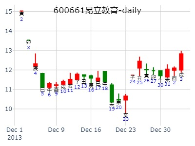

主帖标题: 关于 兄弟爻 在 预测行情 中 的基本 性质
又如，测 万杰高科 明日（己卯日）之涨跌，得：
公历时间：2005年2月23日18时10分 农历时间：乙酉年 正月十五日酉时
干支：乙酉年 戊寅月 戊寅日 辛酉时
旬空：午未 申酉 申酉 子丑
神煞：驿马─申 桃花─卯 日禄─巳 贵人─丑，未
巽宫：巽为风（六冲）
六神 【本 卦】
朱雀 ▄▄▄▄▄ 兄弟辛卯木 世
青龙 ▄▄▄▄▄ 子孙辛巳火
玄武 ▄▄ ▄▄ 妻财辛未土
白虎 ▄▄▄▄▄ 官鬼辛酉金 应
螣蛇 ▄▄▄▄▄ 父母辛亥水
勾陈 ▄▄ ▄▄ 妻财辛丑土
结果是 上涨3.89% -------- 一般来说，兄弟旺相 说明 卖出的量很大，应该是行情走到了
阻力位，或者是行情涨到了 解套盘， 或者是获利者比较多-----故卖量较大。在
卦中 则表现 为 兄弟爻 旺相。事实上，上涨行情 必须放量。而无量上涨，只能是反弹。
只是 兄弟太旺， 说明阻力太大 ----------- 最终必然克财： 行情多要回调。
___
巽静卦_sh000001
占事:2016.2.25上证走势暴跌经典
时间: 2016-02-24
干支: 丙申年庚寅月丙子日丙申时 (旬空: 申酉 ) （时空：辰巳）
巽静卦
六神 伏神 本 卦
青龙 ▅▅▅▅▅ 兄弟卯木 世
玄武 ▅▅▅▅▅ 子孙巳火
白虎 ▅▅ ▅▅ 妻财未土
腾蛇 ▅▅▅▅▅ 官鬼酉金 应
勾陈 ▅▅▅▅▅ 父母亥水
朱雀 ▅▅ ▅▅ 妻财丑土
主帖标题: 六爻猜想：2020年2月21日上证收盘指数个位数?
2020年2月21日上证收盘指数个位数z?
公历起卦时间：2020年2月21日14时11分 (电脑自动)
干支：庚子年 戊寅月 甲午日 辛未时 （日空：辰巳）
神煞：驿马－申 桃花－卯 日禄－寅 贵人－丑，未
巽宫：巽为风 (六冲)
六神 伏神 本 卦
玄武 戌 兄弟辛卯木 ▅▅▅▅▅
白虎 申 子孙辛巳火 ▅▅▅▅▅
螣蛇 午 妻财辛未土 ▅▅ ▅▅
勾陈 辰 官鬼辛酉金 ▅▅▅▅▅
朱雀 寅 父母辛亥水 ▅▅▅▅▅
青龙 子 妻财辛丑土 ▅▅ ▅▅
测下周沪市大盘指数
公历起卦时间：2021年2月19日14时47分 (在线摇卦)
干支：辛丑年 庚寅月 戊戌日 己未时 （日空：辰巳）
巽宫：巽为风 (六冲)
六神 本 卦
朱雀 兄弟辛卯木 ▅▅▅▅▅ 世
青龙 子孙辛巳火 ▅▅▅▅▅
玄武 妻财辛未土 ▅▅ ▅▅
白虎 官鬼辛酉金 ▅▅▅▅▅ 应
螣蛇 父母辛亥水 ▅▅▅▅▅
勾陈 妻财辛丑土 ▅▅ ▅▅
一个卦起出后，必须验证卦的正确性。
比如上周五，我手摇一个卦。
公历起卦时间：2021年2月19日14时47分 (在线摇卦)
干支：辛丑年 庚寅月 戊戌日 己未时 （日空：辰巳）
巽宫：巽为风 (六冲)
六神 本 卦
朱雀 兄弟辛卯木 ▅▅▅▅▅ 世
青龙 子孙辛巳火 ▅▅▅▅▅
玄武 妻财辛未土 ▅▅ ▅▅
白虎 官鬼辛酉金 ▅▅▅▅▅ 应
螣蛇 父母辛亥水 ▅▅▅▅▅
勾陈 妻财辛丑土 ▅▅ ▅▅
我直接认为，这个卦反了，必须反断。
因为戌日的巳时跌，而本卦的巳火子孙为多方，该涨；丑未戌三刑，该跌，但实际涨。所以，不验证卦的错对，可能断卦南辕北辙。
基于以上理论，我个人不太赞同周一或者周末起卦，因为可能无法验证。
个人提倡：周五起卦。
[09己丑岁每日大盘预测实践] 沪市大盘指数涨跌！开市日每天更新！
占事：3月17日辛酉日沪市大盘指数涨跌！
干支：己丑年 丁卯月 庚申日 丙戌时 （日空：子丑）
神煞：驿马－寅 桃花－酉 日禄－申 贵人－丑，未
巽宫：巽为风 (六冲)
六神 伏神 本 卦
腾蛇 兄弟辛卯木 ▅▅▅▅▅ 世
勾陈 子孙辛巳火 ▅▅▅▅▅
朱雀 妻财辛未土 ▅▅ ▅▅
青龙 官鬼辛酉金 ▅▅▅▅▅ 应
玄武 父母辛亥水 ▅▅▅▅▅
白虎 妻财辛丑土 ▅▅ ▅▅
明天世得月建相助暗动,应得日建,金木大战,应原神丑土旬空,未土占贵,而包原神水临死地,相较应略旺,全天震荡为主,股指略涨收小阳.
[09己丑岁每日大盘预测实践] 沪市大盘指数涨跌！开市日每天更新！
占事：3月17日辛酉日沪市大盘指数涨跌！
干支：己丑年 丁卯月 庚申日 丙戌时 （日空：子丑）
神煞：驿马－寅 桃花－酉 日禄－申 贵人－丑，未
巽宫：巽为风 (六冲)
六神 伏神 本 卦
腾蛇 兄弟辛卯木 ▅▅▅▅▅ 世
勾陈 子孙辛巳火 ▅▅▅▅▅
朱雀 妻财辛未土 ▅▅ ▅▅
青龙 官鬼辛酉金 ▅▅▅▅▅ 应
玄武 父母辛亥水 ▅▅▅▅▅
白虎 妻财辛丑土 ▅▅ ▅▅
明天世得月建相助暗动,应得日建,金木大战,应原神丑土旬空,未土占贵,而包原神水临死地,相较应略旺,全天震荡为主,股指略涨收小阳.
百度图片识别结果，请注意检查
起卦hour:2015年3月24日9时7分
时间: 2015-03-24
干支: 乙未年己卯月己亥日 (旬空: 辰巳 )
巽静卦
勾陈 ▅▅▅▅▅ 兄弟卯木 世
朱雀 ▅▅▅▅▅ 子孙巳火
青龙 ▅▅ ▅▅ 妻财未土
玄武 ▅▅▅▅▅ 官鬼酉金 应
白虎 ▅▅▅▅▅ 父母亥水
腾蛇 ▅▅ ▅▅ 妻财丑土
季卦：600718东软7月1日前走势。巽为风静卦。.pdf
主帖标题: 方大炭素 何时涨停？?
男 占事：没填
公历起卦时间：2021年3月9日8时18分 (电脑自动)
干支：辛丑年 辛卯月 丙辰日 壬辰时 （日空：子丑）
神煞：驿马－寅 桃花－酉 日禄－巳 贵人－酉，亥
巽宫：巽为风 (六冲)
六神 伏神 本 卦
青龙 兄弟辛卯木 ▅▅▅▅▅ 世
玄武 子孙辛巳火 ▅▅▅▅▅
白虎 妻财辛未土 ▅▅ ▅▅
螣蛇 官鬼辛酉金 ▅▅▅▅▅ 应
勾陈 父母辛亥水 ▅▅▅▅▅
朱雀 妻财辛丑土 ▅▅ ▅▅
百度图片识别结果，请注意检查
起卦hour:2015年4月2日8时46分
时间: 2015-04-02
干支: 乙未年己卯月戊申日 (旬空: 寅卯 )
巽静卦
朱雀 ▅▅▅▅▅ 兄弟卯木 世
青龙 ▅▅▅▅▅ 子孙巳火
玄武 ▅▅ ▅▅ 妻财未土
白虎 ▅▅▅▅▅ 官鬼酉金 应
腾蛇 ▅▅▅▅▅ 父母亥水
勾陈 ▅▅ ▅▅ 妻财丑土
亿晶光电4，5月走势。巽为风静卦。.pdf
分享一个涨停卦供大家参考
占事：旋极信息4月6日涨跌
干支：丙申年 壬辰月 戊午日 庚申时 （日空：子丑）
神煞：驿马－申 桃花－卯 日禄－巳 贵人－丑，未
巽宫：巽为风 (六冲)
六神 伏神 本 卦
朱雀 兄弟辛卯木 ▅▅▅▅▅ 世
青龙 子孙辛巳火 ▅▅▅▅▅
玄武 妻财辛未土 ▅▅ ▅▅
白虎 官鬼辛酉金 ▅▅▅▅▅ 应
腾蛇 父母辛亥水 ▅▅▅▅▅
勾陈 妻财辛丑土 ▅▅ ▅▅
4月24日至4月28日上证大盘预测
公历时间：2023年4月21日15时13分
干 支：癸卯年 丙辰月 己酉日 壬申时
旬 空：辰巳 子丑 寅卯 戌亥
神 煞：驿马─亥 桃花─午 日禄─午 贵人─子，申
巽宫：巽为风（六冲）
六神 【本 卦】
勾陈 ▄▄▄▄▄ 兄弟辛卯木 世
朱雀 ▄▄▄▄▄ 子孙辛巳火
青龙 ▄▄ ▄▄ 妻财辛未土
玄武 ▄▄▄▄▄ 官鬼辛酉金 应
白虎 ▄▄▄▄▄ 父母辛亥水
螣蛇 ▄▄ ▄▄ 妻财辛丑土
巽静卦,603019中科曙光到下周五
时间: 2023-4-22
干支: 癸卯年丙辰月庚戌日 (旬空: 寅卯 )
巽静卦
腾蛇 ▅▅▅▅▅ 兄弟卯木 世
勾陈 ▅▅▅▅▅ 子孙巳火
朱雀 ▅▅ ▅▅ 妻财未土
青龙 ▅▅▅▅▅ 官鬼酉金 应
玄武 ▅▅▅▅▅ 父母亥水
白虎 ▅▅ ▅▅ 妻财丑土
600477明天涨跌？
占事：000786明天涨跌？
干支：丁酉年 丙午月 丁亥日 丙午时 （日空：午未）
神煞：驿马－巳 桃花－子 日禄－午 贵人－酉，亥
巽宫：巽为风 (六冲)
六神 伏神 本 卦
青龙 兄弟辛卯木 ▅▅▅▅▅ 世
玄武 子孙辛巳火 ▅▅▅▅▅
白虎 妻财辛未土 ▅▅ ▅▅
腾蛇 官鬼辛酉金 ▅▅▅▅▅ 应
勾陈 父母辛亥水 ▅▅▅▅▅
朱雀 妻财辛丑土 ▅▅ ▅▅
占事：002009今天走势
起卦方式：手工指定
公历时间：2013年7月30日9时43分
干 支：癸巳年 己未月 丁酉日 乙巳时
旬 空：午未 子丑 (辰巳) 寅卯
巽宫：巽为风（六冲）
六神 【本 卦】
青龙 ▄▄▄▄▄ 兄弟辛卯木 世
玄武 ▄▄▄▄▄ 子孙辛巳火
白虎 ▄▄ ▄▄ 妻财辛未土
螣蛇 ▄▄▄▄▄ 官鬼辛酉金 应
勾陈 ▄▄▄▄▄ 父母辛亥水
朱雀 ▄▄ ▄▄ 妻财辛丑土
试断：收阳
平开后震荡向下午盘又震荡向上，尾盘拉升涨0.62、6.16%的阳线。
兄弟持世，则喜入月墓日破。故大涨。且世应又是官制兄的关系。喜官。
主帖标题: 占几个新股，上市三四天就开板了，请大家帮忙看看
女 占事：占601211此股下周走势
起卦方式：手动摇卦
公历时间：2015年7月4日18时54分
干 支：乙未年 壬午月 辛巳日 丁酉时
旬 空：辰巳 申酉 申酉 辰巳
神 煞：驿马─亥 桃花─午 日禄─酉 贵人─寅，午
巽宫：巽为风（六冲）
六神 【本 卦】
螣蛇 ▄▄▄▄▄ 兄弟辛卯木 世
勾陈 ▄▄▄▄▄ 子孙辛巳火
朱雀 ▄▄ ▄▄ 妻财辛未土
青龙 ▄▄▄▄▄ 官鬼辛酉金 应
玄武 ▄▄▄▄▄ 父母辛亥水
白虎 ▄▄ ▄▄ 妻财辛丑土
占事：510050etf未来二周 风生水起
公历时间：2015年7月9日14时16分
干 支：乙未年 癸未月 丙戌日 乙未时
旬 空：辰巳 申酉 (午未) 辰巳
????巽宫：巽为风（六冲）
?六神?【本 卦】?
?青龙 ▄▄▄▄▄ 兄弟辛卯木 世
?玄武 ▄▄▄▄▄ 子孙辛巳火
?白虎 ▄▄ ▄▄ 妻财辛未土
?螣蛇 ▄▄▄▄▄ 官鬼辛酉金 应
?勾陈 ▄▄▄▄▄ 父母辛亥水
?朱雀 ▄▄ ▄▄ 妻财辛丑土
占事：驰宏锌锗8.23收盘走势？
公历起卦时间：2021年8月23日9时29分 (电脑自动)
干支：辛丑年 丙申月 癸卯日 丁巳时 （日空：辰巳）
神煞：驿马－巳 桃花－子 日禄－子 贵人－卯，巳
巽宫：巽为风 (六冲)
六神 伏神 本 卦
白虎 兄弟辛卯木 ▅▅▅▅▅ 世
螣蛇 子孙辛巳火 ▅▅▅▅▅
勾陈 妻财辛未土 ▅▅ ▅▅
朱雀 官鬼辛酉金 ▅▅▅▅▅ 应
青龙 父母辛亥水 ▅▅▅▅▅
玄武 妻财辛丑土 ▅▅ ▅▅

占事：300349到周五收盘涨跌？
以12.49为准 有没有老师帮忙预测下金卡智能，感激不尽
公历时间：2021年8月30日16时35分
干 支：辛丑年 丙申月 庚戌日 甲申时
旬 空：辰巳 辰巳 寅卯 午未
神 煞：驿马─申 桃花─卯 日禄─申 贵人─丑，未
巽宫：巽为风（六冲）
六神 【本 卦】
螣蛇 ▄▄▄▄▄ 兄弟辛卯木 世
勾陈 ▄▄▄▄▄ 子孙辛巳火
朱雀 ▄▄ ▄▄ 妻财辛未土
青龙 ▄▄▄▄▄ 官鬼辛酉金 应
玄武 ▄▄▄▄▄ 父母辛亥水
白虎 ▄▄ ▄▄ 妻财辛丑土
巽静卦_000948
占事: 南天信息未来二周
时间: 2022-10-17
干支: 壬寅年庚戌月癸卯日丙辰时 (旬空: 辰巳 )
巽静卦
六神 伏神 本 卦
白虎 ▅▅▅▅▅ 兄弟卯木 世
腾蛇 ▅▅▅▅▅ 子孙巳火
勾陈 ▅▅ ▅▅ 妻财未土
朱雀 ▅▅▅▅▅ 官鬼酉金 应
青龙 ▅▅▅▅▅ 父母亥水
玄武 ▅▅ ▅▅ 妻财丑土
月财合世爻。
南天信息1017两周卦。巽为风静卦。巽静卦。风生水起
当天兄弟持世，照样涨停。
占事：st罗牛000735，下周走向？
公历起卦时间：2007年11月11日17时18分 (手工指定)
干支：丁亥年 辛亥月 己酉日 癸酉时 （日空：寅卯）
神煞：驿马－亥 桃花－午 日禄－午 贵人－子，申
巽宫：巽为风 (六冲)
六神 伏神 本 卦
勾陈 兄弟辛卯木 ▅▅▅▅▅ 世
朱雀 子孙辛巳火 ▅▅▅▅▅
青龙 妻财辛未土 ▅▅ ▅▅
玄武 官鬼辛酉金 ▅▅▅▅▅ 应
白虎 父母辛亥水 ▅▅▅▅▅
腾蛇 妻财辛丑土 ▅▅ ▅▅
以下是引用金眼牛在2008-11-7 19:47:00的发言：
占事：11月10-14日大盘涨跌?
公历时间：2008年11月7日15时36分 星期五
干支：戊子年 癸亥月 辛亥日 丙申时 (旬空：寅卯)
神煞：驿马—巳 桃花—子 日禄—酉 贵人—寅，午
特别提示您：今天09时21分交立冬节
巽宫：巽为风（六冲）
六神 【本 卦】
螣蛇 ▅▅▅▅▅ 兄弟辛卯木 世
勾陈 ▅▅▅▅▅ 子孙辛巳火
朱雀 ▅▅ ▅▅ 妻财辛未土
青龙 ▅▅▅▅▅ 官鬼辛酉金 应
玄武 ▅▅▅▅▅ 父母辛亥水
白虎 ▅▅ ▅▅ 妻财辛丑土
世爻旬空关键
___
主帖标题: 11月14-18日大盘涨跌卦
占事：11月14-18日大盘涨跌？
公历起卦时间：2011年11月11日16时19分 (手工指定)
干支：辛卯年 己亥月 庚午日 甲申时 （日空：戌亥）
神煞：驿马－申 桃花－卯 日禄－申 贵人－丑，未
巽宫：巽为风 (六冲)
六神 伏神 本 卦
腾蛇 兄弟辛卯木 ▅▅▅▅▅ 世
勾陈 子孙辛巳火 ▅▅▅▅▅
朱雀 妻财辛未土 ▅▅ ▅▅
青龙 官鬼辛酉金 ▅▅▅▅▅ 应
玄武 父母辛亥水 ▅▅▅▅▅
白虎 妻财辛丑土 ▅▅ ▅▅
11月9-13日大盘——听闻ipo欲重启消息后起卦??
niubi
11月9-13日大盘?
公历时间：2015年11月6日18时32分????
干 支：乙未年?丙戌月?丙戌日?丁酉时
旬 空：辰巳???午未???(午未)???辰巳??
????巽宫：巽为风（六冲）?
?六神?【本 卦】?
?青龙 ▄▄▄▄▄ 兄弟辛卯木 世?
?玄武 ▄▄▄▄▄ 子孙辛巳火 ?
?白虎 ▄▄??▄▄ 妻财辛未土 ?
?螣蛇 ▄▄▄▄▄ 官鬼辛酉金 应?
?勾陈 ▄▄▄▄▄ 父母辛亥水 ?
?朱雀 ▄▄??▄▄ 妻财辛丑土 ?
wukevin
占事：2015年11月9-20日大盘走势
起卦方式：手动摇卦
公历时间：2015年11月9日2时21分
干 支：乙未年 丁亥月 己丑日 乙丑时
旬 空：辰巳 午未 (午未) 戌亥
巽宫：巽为风（六冲）
六神 【本 卦】
勾陈 ▄▄▄▄▄ 兄弟辛卯木 世
朱雀 ▄▄▄▄▄ 子孙辛巳火
青龙 ▄▄ ▄▄ 妻财辛未土
玄武 ▄▄▄▄▄ 官鬼辛酉金 应
白虎 ▄▄▄▄▄ 父母辛亥水
螣蛇 ▄▄ ▄▄ 妻财辛丑土
申日莫非月破，逢日合。
风生水起 占事：600606到12月5日走势
起卦方式：手动摇卦
公历时间：2015年11月18日12时29分
干 支：乙未年?丁亥月?戊戌日?戊午时
旬 空：辰巳???午未???辰巳???子丑??
???巽宫：巽为风（六冲）
?六神?【本 卦】
?朱雀 ▄▄▄▄▄ 兄弟辛卯木 世
?青龙 ▄▄▄▄▄ 子孙辛巳火
?玄武 ▄▄ ▄▄ 妻财辛未土
?白虎 ▄▄▄▄▄ 官鬼辛酉金 应
?螣蛇 ▄▄▄▄▄ 父母辛亥水
?勾陈 ▄▄ ▄▄ 妻财辛丑土
子孙月破入日墓？
占事：600661新南洋5日涨跌
公历起卦时间：2013年12月4日20时4分 (电脑自动)
干支：癸巳年 癸亥月 甲辰日 甲戌时 （日空：寅卯）
神煞：驿马－寅 桃花－酉 日禄－寅 贵人－丑，未
巽宫：巽为风 (六冲)
六神 伏神 本 卦
玄武 兄弟辛卯木 ▅▅▅▅▅ 世
白虎 子孙辛巳火 ▅▅▅▅▅
腾蛇 妻财辛未土 ▅▅ ▅▅
勾陈 官鬼辛酉金 ▅▅▅▅▅ 应
朱雀 父母辛亥水 ▅▅▅▅▅
青龙 妻财辛丑土 ▅▅ ▅▅
亥水暗动
